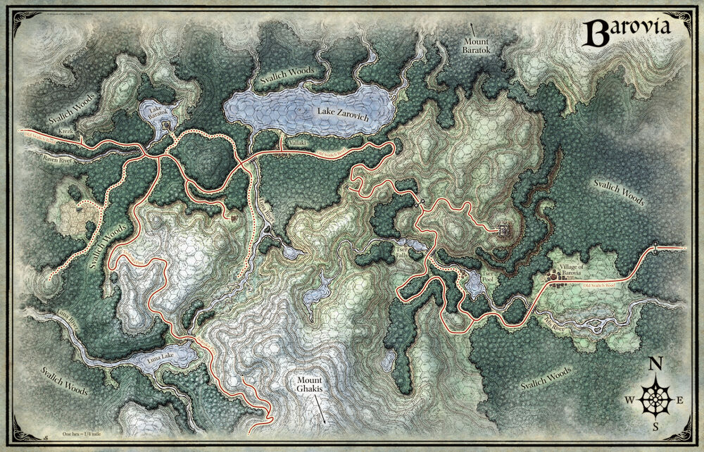

Land of Barovia

Village of Barovia
-
Castle Ravenloft overlooks the town of Barovia, and Straud has his
eye on a girl there named Ireena (the soul reincarnate of Tatyana).
Ireena is the adopted daughter of the burgomaster and the lost
sister of Izek in Vallaki.
-
Barovia is “the saddest place in all the land.” The residents live
in terror of Strahd and rarely leave their homes. Almost every shop
is long abandoned and looted of valuables. Claw marks cover the
walls.
-
Unlike the other towns, Strahd visits Barovia often. Like every
night up until recently.
-
The town is filled with resigned villagers, rat swarms loyal to
Strahd, and zombies.
-
March of the Dead: Every night at midnight spirits gather in the
cemetery. They are aware of nothing but their goal- to march to the
castle and finally conquer Strahd.
The Town of Vallaki
-
Seemingly less oppressed than the village of Barovia, but it’s
constructed of false hope rather than true happiness.
-
Vallaki was built beyond the sight of Castle Ravenloft by an
ancestor of burgomaster Baron Vargas Vallakovich. The Vallokoviches
are Barovian royalty, who believe themselves to be superior to the
Zarovich reign.
-
Baron Vallakovich is convinced that “hope and happiness” will be the
citizens’ salvation, ultimately allowing them to escape this
forsaken demiplane. He organizes celebration after celebration, but
many of the citizens are becoming numb to their false promises. - It
seems he is getting more desperate, and naysayer citizens can find
themselves arrested for their doubt.
-
The town has a group of cultists who worship devils. They consider
their leader to be Lady Wachter, who is a loyal Straud follower and
who wants to become burgomaster herself.
-
This town has tall wooden walls to protect it from many common
terrors of the land.
-
There are 3 gates in the wall: one in the North leading to the lake,
and another in the West and East. The gates are made of iron and
manned by 2 guards, who will make conversation with visitors.. And
poke them with pikes if they get too close! Don’t make them mad or
they’ll alert the whole guard.
The Village of Krezk
-
Far in the West of Barovia, tucked in at the border, is the humble
Village of Krezk. While far from Strahd’s Castle, the fear of him
here is palpable. The people are so afraid of Strahd and his wolves
that they never leave the walls of the village
-
The village was founded and fortified after Stahd conquered the
valley centuries ago.
-
The current burgomaster, Dmitri, believes strangers are either
allies or enemies of Strahd… neither of which have any place in his
village. The only way of gaining entry is for the players to make
themselves useful to Krezk in some way.
-
Days ago, the burgomaster’s last child died; a cloud of darkness
hangs over the town as everyone wonders what will become of the
Krezkev line.
-
It’s a family-centric village: every cottage has its own family
cemetery where family members are interred. But unbeknownst to
anyone, all the coffins are now empty.
Castle Ravenloft
- Castle Ravenloft is the ancestral home of the von Zarovich family and the current home of the vampire lord Strahd von Zarovich. It looms dark over the land of Barovia, stark against the sky as an omnipresent sign of Strahd's power over the land.
- King Barov von Zarovich fought to reclaim Ravenloft, which had been captured by the worshipers of dark gods who had conquered the von Zaroviches' ancestral lands. Both Strahd and his younger brother Sergei were born in Castle Ravenloft. Shortly after Sergei's birth, there was an assault on the castle, during which young Strahd defended his mother and brother from the invading army. Shortly thereafter, Strahd became lord of Castle Ravenloft, and it served as the base of operations for his wars of reconquest through Barovia.